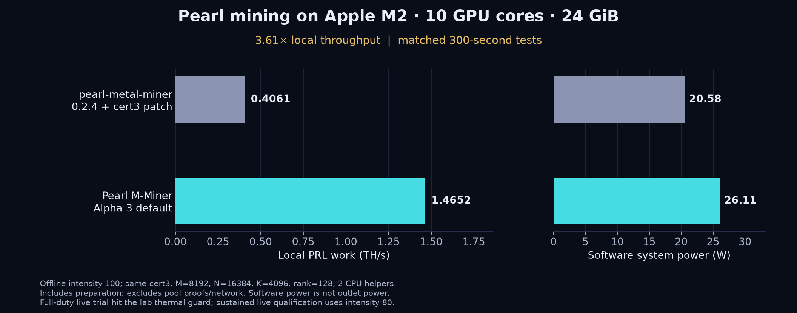

M2 Mac PRL mining benchmark: Pearl M-Miner versus pearl-metal-miner
On 2026-10-30, a MacBook Pro with a 10-core Apple M2 GPU, 24 GiB unified memory and macOS 27.0 built the unchanged v0.1.0-alpha.3 source release and passed its official-proof self-test. The following comparison uses the same device, certificate version, matrix dimensions, CPU-helper count and 300-second measurement duration.
| Miner | Local PRL work | Software power |
|---|---|---|
| pearl-metal-miner 0.2.4 + cert3 compatibility | 0.4061 TH/s | 20.58 W |
| Pearl M-Miner Alpha 3, default M2 profile | 1.4652 TH/s | 26.11 W |
The ratio is 3.61×, or 260.8% higher local throughput. The control preserves the upstream GPU kernels and adds documented certificate-v3 compatibility. This is not a Pearly comparison. Power comes from macmon software telemetry, not an AC outlet meter; it does not establish electricity cost or net profit.
Observed operating limit: an initial full-duty pool trial stopped at the lab’s 95°C average-sensor guard after about two minutes, with two accepted and zero rejected shares. Repeated ten-minute live trials use 80% intensity for both miners. On this laptop, begin with --intensity 80; the full-duty offline headline is not a sustained live-rate promise. This Celsius guard belonged to the test supervisor, not a newly shipped miner feature.

Ten-minute live trials at intensity 80
| Miner | Local PRL work | Software power | Accepted / rejected |
|---|---|---|---|
| Pearl M-Miner Alpha 3 | 1.0376 TH/s | 19.95 W | 3 / 0 |
| Upstream 0.2.4 + cert3 compatibility | 0.3051 TH/s | 16.37 W | 1 / 0 |
These sessions include real job changes, proof preparation and network interruptions. Power covers the full process phase. Small share counts do not measure precise pool hashrate, paid income or overnight reliability. Intensity is a scheduling control, not a proportional hashrate guarantee.
How close is M2 to its arithmetic limit?
A model using 10 GPU cores, 128 lanes, two operations per FMA and 1.398 GHz gives approximately 3.579 TFLOP/s. For this direct scan algorithm, two floating-point operations correspond to one reported PRL work unit, giving about 1.789 TH/s before overhead. Our 300-second matrix microbenchmark measured 3.321 GPU TFLOP/s. This is a workload-specific reference, not a universal upper bound on every possible PRL algorithm.
Correctness, mining pools and fee
The detailed report separates offline proof checks from bounded same-pool trials. The optional default developer contribution uses 1% of completed valid GPU scan time, not 1% of income. Multiplying the local rate by 0.99 is only a capacity model; it does not measure pool revenue. M2 Pro, Max, Ultra, other GPU-core counts and other operating-system versions still need their own tests.
Read the full M2 report, machine-readable evidence and reproduction materials. Follow the versioned setup guide, run the local self-test, and use your own public payout identity for an authorized pool trial.